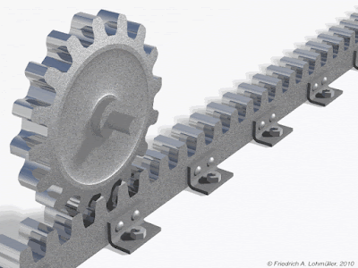
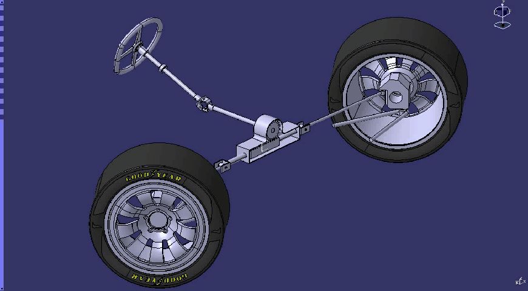
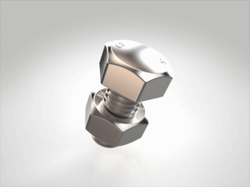
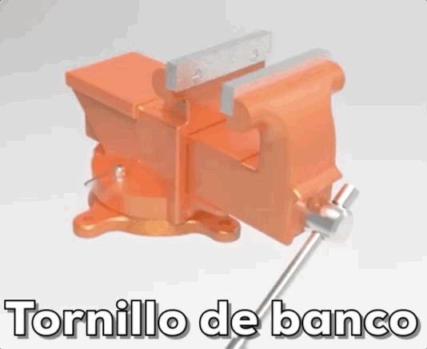
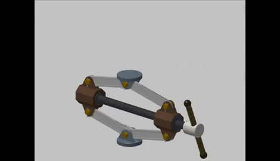

Piñón-cremallera
Consiste en la transmisión de movimiento desde una rueda dentada llamada piñón a otro engranaje rectilíneo (una pieza recta con dientes) llamado cremallera. Los dientes de la cremallera son trapezoidales.

Este es un mecanismo reversible, por lo que funciona de las dos maneras posibles:
- Si el elemento motriz es el piñón, se transforma el movimiento circular del piñón en movimiento lineal de la cremallera.
- Si el elemento motriz es la cremallera, se transforma el movimiento rectilíneo en circular.
Este mecanismo se puede encontrar, por ejemplo:
- en una puerta corredera de garaje (transforma el movimiento de giro del motor en movimiento rectilíneo de la puerta)
- en un taladro de columna, transformando el movimiento circular de la palanca en un movimiento rectilíneo de la base o del propio taladro

- en la dirección de cremallera de un coche:

En realidad, este mecanismo es un caso particular de los engranajes que ya hemos estudiado. La diferencia es que ahora uno de los engranajes no es una rueda sino una pieza recta. Podemos calcular el desplazamiento (avance) y la velocidad de la cremallera en función del módulo (m) o el paso (p) del engranaje con estas expresiones:
Avance de la cremallera (AC)
\[A_{C}=m\cdot \pi \cdot Z\cdot n'=p\cdot Z\cdot n'\]
Donde:
- AC: avance de la cremallera, en milímetros (mm)
- m: módulo del engranaje, en milímetros (mm)
- p: paso del engranaje, en milímetros (mm)
- n': número de vueltas que ha dado el piñón
Velocidad de la cremallera (vC)
\[v_{C}=m\cdot \pi \cdot Z\cdot n=p\cdot Z\cdot n\]
Donde:
- vC: velocidad de la cremallera, en milímetros por minuto (mm/min)
- m: módulo del engranaje, en milímetros (mm)
- p: paso del engranaje, en milímetros (mm)
- n: régimen de giro del piñón, en rpm
Las principales ventajas de este mecanismo son:
- Es suave y preciso.
- Puede transmitir grandes esfuerzos y potencias elevadas.
Ejercicios de piñón-cremallera
Tornillo-tuerca
Es el mecanismo formado por un tornillo (también llamado husillo) y una tuerca que enroscan entre sí. Es un mecanismo irreversible, pues sólo puede transformar movimiento circular en lineal, pero no al revés.

Transforma el movimiento de giro en rectilíneo cuando a uno de los dos elementos (tornillo o tuerca) se le impide girar o desplazarse o ambas cosas a la vez. Se pueden dar los siguientes casos:
- Tuerca fija (no gira ni se desplaza), el tornillo se desplaza a la vez que gira.
- Tornillo fijo (no gira ni se desplaza), la tuerca se desplaza a la vez que gira.
- Tuerca impedida en el giro y el tornillo impedido el desplazamiento, el tornillo gira y la tuerca se desplaza.
- Tornillo impedido en el giro y la tuerca impedida en el desplazamiento, la tuerca gira y el tornillo se desplaza.
Sus principales ventajas son:
- Al ser un mecanismo irreversible, una vez pare el giro del tornillo o de la tuerca, el mecanismo queda bloqueado, lo que aporta seguridad.
- Permite transmitir enormes esfuerzos, aunque a costa de tener que hacer muchos giros.
Teniendo en cuentas sus ventajas, no es de extrañar que algunas de las principales aplicaciones de este mecanismo sean el movimiento de cargas y la sujeción de objetos. Podemos verlo en acción en los tornillos de banco que tenemos en los talleres de Tecnología del instituto, donde podemos sujetar con gran fuerza objetos.

Otros ejemplos básicos de aplicación pueden ser prensas, gatos de coche, grifos o desplazamientos de mesas de máquinas (torno, fresadora,...). Aquí puedes ver el funcionamiento de un gato de coche. Al ser irreversible el mecanismo, no se puede caer el coche aunque no hagamos fuerza en la manivela:

En los tornillos, al igual que ocurría en los engranajes, también existe un parámetro llamado paso. En este caso, el paso del tornillo (al que también se denota por la letra p) es la distancia que hay entre dos filetes de la rosca:

Además, las roscas pueden ser simples o estar formadas por varios canales paralelos entre sí. Al número de canales que tiene una tuerca se le llama entradas (e). Las roscas simples tienen e = 1, pero puede haber roscas dobles (e=2), triples (e=3), etc.

Sabiendo esto, podemos calcular algunos valores importantes para los mecanismos tornillo-tuerca en función del paso (p) y del número de entradas (e):
Avance del tornillo o de la tuerca (At):
\[A_{t}=p\cdot e\cdot n'\]
Donde:
- At: avance del tornillo (o de la tuerca), en milímetros (mm)
- p: paso de la rosca, en milímetros (mm)
- e: número de entradas de la rosca
- n': número de vueltas del tornillo (o de la tuerca)
Velocidad de avance del tornillo o de la tuerca (vt):
\[v_{t}=p\cdot e\cdot n\]
Donde:
- vt: velocidad de avance del tornillo (o de la tuerca), en milímetros por minuto (mm/min)
- p: paso de la rosca, en milímetros (mm)
- e: número de entradas de la rosca
- n: régimen de giro del tornillo (o de la tuerca), en rpm.
Relación entre la fuerza ejercida en el avance (F) y el par de giro (M):
Despreciando las pérdidas, podemos decir que el trabajo de desplazamiento es igual al trabajo de rotación. De ahí podemos llegar a deducir una expresión que relacione la fuerza del avance (F) con el par de giro (M):
\[W_{LINEAL}=W_{GIRO}\]
\[F\cdot A_{t}=M\cdot 2\pi \cdot n' \cdot 1000\]
\[F\cdot p\cdot e \cdot n'=M\cdot 2\pi \cdot n' \cdot 1000\]
Por tanto:
\[F=\frac{M\cdot 2\pi \cdot 1000 }{p\cdot e}\]
Donde:
- F:fuerza ejercida en el avance, en newtons (N)
- M: par de giro, en newtons-metro (N·m)
- p: paso de la rosca, en milímetros (mm)
- e: número de entradas de la rosca
- 1000: factor de conversión de metros a milímetros
Ejercicio resuelto: una prensa de tornillo, del giro a la fuerza
La prensa de un taller lleva un tornillo de paso p = 6 mm y e = 2 entradas, que gira a 90 rpm accionado por un par motor de M = 8 N·m. La tuerca avanza sin girar.
a) Avance de la tuerca en 25 vueltas. b) Velocidad de avance, en mm/s. c) Fuerza que ejerce la tuerca, despreciando las pérdidas.
Ver la resolución paso a paso
Paso 1. No confundas el paso con el avance por vuelta.
El paso es la distancia entre dos filetes consecutivos. Pero si la rosca tiene varias entradas (varios canales paralelos), en una vuelta la tuerca recorre un paso por cada entrada. Con p = 6 mm y e = 2, cada vuelta son 12 mm, no 6.
Paso 2. Avance en 25 vueltas.
\[A_{t}=p\cdot e\cdot n'\]
Sustituyendo: At = 6 · 2 · 25 = 300 mm.
Paso 3. Velocidad de avance.
Es la misma fórmula cambiando las vueltas por las vueltas por minuto:
\[v_{t}=p\cdot e\cdot n\]
Sustituyendo: vt = 6 · 2 · 90 = 1080 mm/min.
El enunciado la pide en mm/s, así que hay que dividir entre 60: 1080 / 60 = 18 mm/s. Este paso se olvida mucho: la fórmula da siempre mm/min porque n va en rpm.
Paso 4. De dónde sale la fuerza.
Si no hay pérdidas, todo el trabajo que metemos girando sale empujando. Igualando el trabajo de giro y el de avance se llega a
\[F=\frac{M\cdot 2\pi \cdot 1000}{p\cdot e}\]
El 1000 está solo para pasar de metros a milímetros, porque el par va en N·m y el paso en mm. Si se olvida, el resultado sale mil veces más pequeño.
Paso 5. Sustituye.
F = (8 · 2π · 1000) / (6 · 2) = 50 265,5 / 12 = 4188,79 N.
Ocho newton-metro de par se convierten en más de cuatro mil newtons de empuje. Esa es la ventaja del tornillo: multiplica muchísimo la fuerza a costa de avanzar muy poco en cada vuelta.
Resultados: 300 mm; 18 mm/s; 4188,79 N.
Ejercicio resuelto: qué par hace falta (el mismo problema, del revés)
Un gato de husillo tiene una rosca simple (e = 1) de paso 4 mm y debe levantar una carga de 12 000 N.
a) ¿Qué par hay que aplicar al husillo? b) ¿Qué fuerza hay que hacer sobre una manivela de 25 cm de brazo? c) ¿Cuántas vueltas hay que dar para subir la carga 6 cm?
Ver la resolución paso a paso
Paso 1. Usa la misma fórmula, despejando lo que ahora es la incógnita.
Antes conocíamos el par y buscábamos la fuerza; ahora es al revés. Se parte de la misma expresión de siempre:
\[F=\frac{M\cdot 2\pi \cdot 1000}{p\cdot e}\]
y se despeja el par en vez de la fuerza:
\[M=\frac{F\cdot p\cdot e}{2\pi \cdot 1000}\]
Merece la pena entenderlo así en vez de aprenderse dos fórmulas: es una sola, leída en los dos sentidos.
Paso 2. Calcula el par.
M = (12 000 · 4 · 1) / (2π · 1000) = 7,64 N·m.
Paso 3. Pasa del par a la fuerza en la manivela.
Un par es una fuerza por su brazo, y el brazo hay que ponerlo en metros porque el par está en N·m:
\[M=F_{m}\cdot b\]
Despejando: Fm = 7,64 / 0,25 = 30,56 N.
Poco más de 30 N —unos tres kilos de fuerza— levantan 12 000 N. Ahí se ve de golpe para qué sirve este mecanismo. Y como es irreversible, al soltar la manivela la carga no baja sola.
Paso 4. Cuenta las vueltas.
La contrapartida es la lentitud. Cada vuelta sube p·e = 4 mm, y hay que subir 60 mm:
\[n'=\frac{A_{t}}{p\cdot e}\]
Sustituyendo: n' = 60 / 4 = 15 vueltas.
Resultados: M = 7,64 N·m; Fm = 30,56 N; 15 vueltas.
Ejercicios de tornillo-tuerca
Test
Piñón-cremallera y tornillo-tuerca. Casi todos los fallos de esta parte son de unidades o de contar mal las entradas de la rosca, así que haz las cuentas antes de elegir.